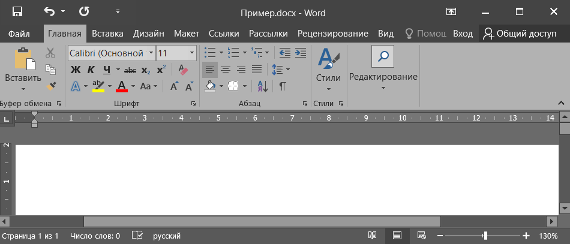
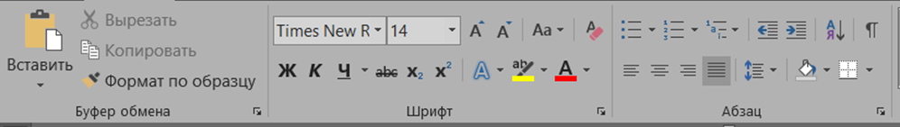
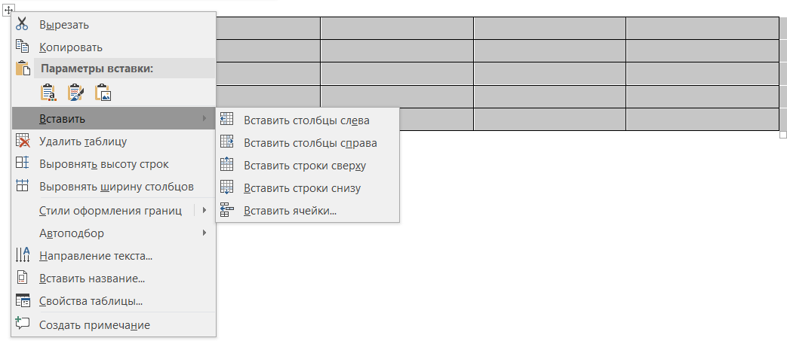

Учебный текстовый редактор, имитирующий Microsoft Word
Исходный код на GitHubMyWord разработан в рамках лабораторных работ для изучения систем контроля версий и документирования. Проект демонстрирует модульную архитектуру, работу с Git, JavaDoc, DocBook и создание пользовательской документации.
Основные возможности: ленточный интерфейс, форматирование текста, стили, вставка изображений и таблиц, проверка правописания, поиск/замена, печать, экспорт в PDF и HTML.
Ленточный интерфейс с вкладками, панель быстрого доступа, линейки.
Редактирование текста, курсор, выделение, буфер обмена, отмена действий.
Шрифты, абзацы, выравнивание, отступы, заливка.
Именованные наборы параметров, автоматическое обновление.
Вставка картинок, изменение размера, обтекание текстом.
Сохранение, открытие, экспорт в PDF, HTML, совместимость с другими форматами.
Настройки страницы, предварительный просмотр, печать.
Диалог поиска с учётом регистра, замена всех вхождений.
Орфография, грамматика, тезаурус (синонимы).
Вставка таблиц, добавление/удаление строк/столбцов, объединение ячеек.
Светлая/тёмная тема, единицы измерения, локализация.



* Изображения являются имитацией, созданы в Microsoft Word для демонстрации.